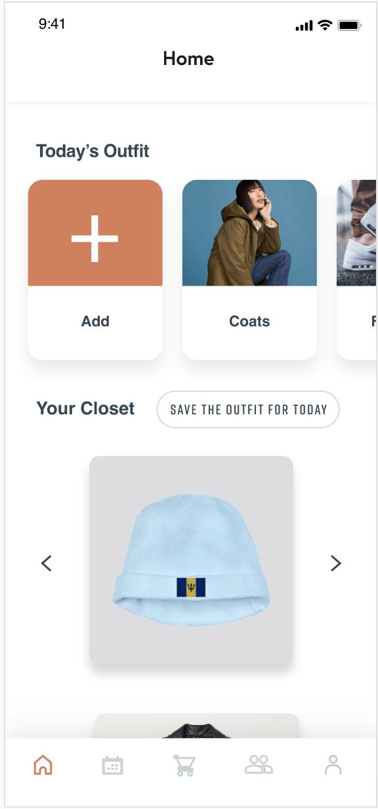

Closet Buddy
Final prototype: Click hereThe project is called closet buddy, and it's a five-person project. I am the designer in the team, and I designed most of the digital prototype based on feedback from team members and the user testing survey. I collaborated with four peers, and they are Rollin, Ruby, Nikhil, and Sarah. It's a term ending project ( 4 months). In this project, we used photoshop and Adobe XD.
Intro
There are problems to be solved all around us. Common, everyday occurrences that have been so integrated into our daily lives that we hardly notice the trouble they cause or think to seek a solution for them. Every day you (presumably) wear clothes, yet if you were to stop a person on the street and ask about the specifics of their wardrobe, it’s unlikely they could answer anything but the most basic of questions. It is also very possible that they have forgotten about a lot of items they own. This can lead to the purchase of new items without realizing just how many items are in the back of their closet, hardly worn. To that end, we seek to solve these problems by offloading the tasks of wardrobe management and selection into a digital service that aids everyone who uses it so they can focus on the rest of life while keeping their fashion fresh and updated.
To begin the design process, we started by analyzing the problem space. Early on we began analyzing other existing applications that offer similar services. Considering that we want to create a robust and intuitive user interface, we analyzed different the different UI’s and made observations about the user experience. We made notes of what worked well and what didn’t and are using that as a starting point of our application.
Next, we considered the limitations of human processing. Wave 1 suggests that information flow is bottom up. This means that it is highly important to consider our UI and stimuli in order to facilitate perception. For this we made sure that our text is legible and that are icons are easily distinguishable and capitalize on interface metaphors so that users can quickly identify their meaning. We plan on incorporating user testing to make sure our information is easy to perceive.
Furthermore, we must consider the limitations of human cognition. For example, we are only able to focus on a select amount of items at a time and attention can shift very quickly. For this reason, we must consider which information is the most important at any given stage. We will attempt to create a simple interface to avoid visual cluttering. Next, our whole system is based on offloading human memory. As we have learned, users can recognize much easier than they can recall. This is why we have moved the wardrobe to a virtual representation so that they do not have to recall their wardrobe when they are in a store. Since one of our problems is that we tend to forget certain items of clothing, the app will store and potentially offer all items in the hopes of avoiding lost clothing.
Based off of our above considerations, used a variety of informed methods. We conducted a GOMS analysis so that we can consider every moment of use. However, the method above is a linear process. We realize that humans are capable of parallel processing. Many of the steps can be simplified into a single cognitive process, which will result in a much quicker response time. This will continue to improve as the users become more familiar with the application. Fitts Law is also incorporated in order to prioritize elements and make the target easier to users to find and click.
We combined a variety of interaction types like instructing, manipulating and exploring so that users can intuitively navigate the interface. Instructions such as “save outfit” allow for quick and efficient interactions. Manipulating outfits exploits a users knowledge of how to move through physical space so that the interaction is familiar and intuitive. Finally, encouraging exploration through outfits and databases will encourage creativity and give them fashion inspiration.
Finally, we began a user survey. This will be sent out with the goal of understanding how a user functions on a given day, how they feel about the current state of their wardrobe and what features they would consider to be necessary or not.
Wave 1
Wave 2
Wave 3
Reference
some of the text are retrieved from my preious design documentation